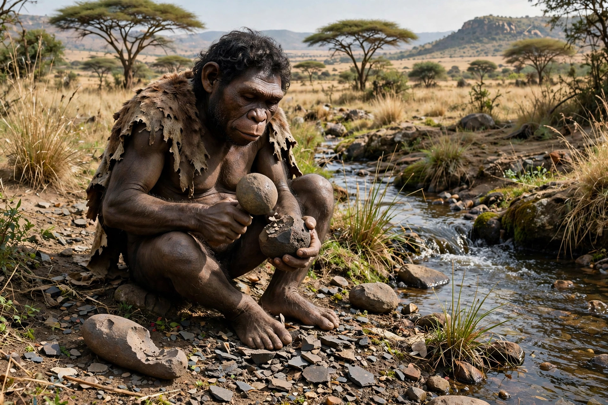

Homo habilis

| Homo habilis | |
| Temporal range | c. 2.4–1.6 million years ago (Pleistocene) |
|---|---|
| First described | 1964, by Louis Leakey, Phillip Tobias and John Napier |
| Type specimen | OH 7, Olduvai Gorge, Tanzania |
| Brain size | c. 510–750 cm³ |
Homo habilis ("handy man") is an extinct species of archaic human that lived in East and South Africa roughly 2.4 to 1.6 million years ago. Proposed by Louis Leakey and colleagues in 1964 from fossils at Olduvai Gorge in Tanzania, it is traditionally regarded as the earliest species of the genus Homo and the maker of the Oldowan stone tool industry.
Discovery
The type specimen, OH 7 — a partial skull, hand bones, and a lower jaw found in 1960 — showed a brain larger than that of Australopithecus and hands capable of a precision grip. Leakey argued that H. habilis, not the robust australopiths, was the true toolmaker and a direct human ancestor. Famous specimens include KNM-ER 1813 from Koobi Fora, Kenya, and the partial skeleton OH 62, nicknamed "Lucy's child" in reference to its discoverer's team.
Anatomy and behaviour
H. habilis stood roughly 1.1–1.4 m tall and weighed about 25–35 kg. Its brain averaged some 600 cm³ — larger than an australopith's, smaller than that of its successor Homo erectus. The legs and feet were suited to walking, but the arms remained relatively long and the fingers curved, suggesting retained climbing ability. Cut-marked bones indicate that it butchered carcasses — whether hunted or scavenged remains debated.
Taxonomic debates
The species' boundaries are disputed. Some researchers split the material into H. habilis and the larger-brained H. rudolfensis; others argue the fossils fall within the variation of H. erectus or even of Australopithecus. Despite these disputes, H. habilis remains central to accounts of the transition from australopiths to Homo.